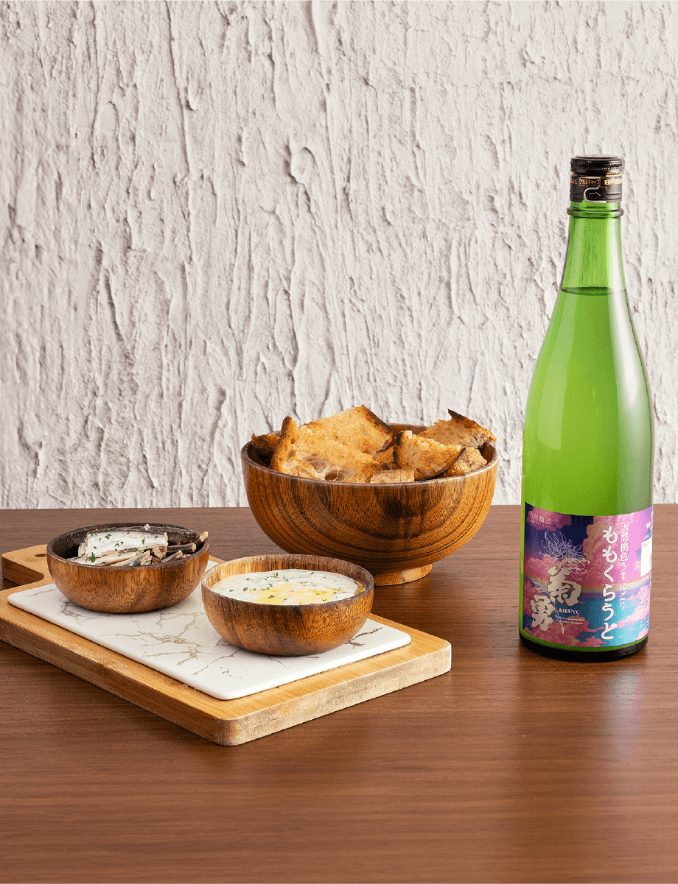
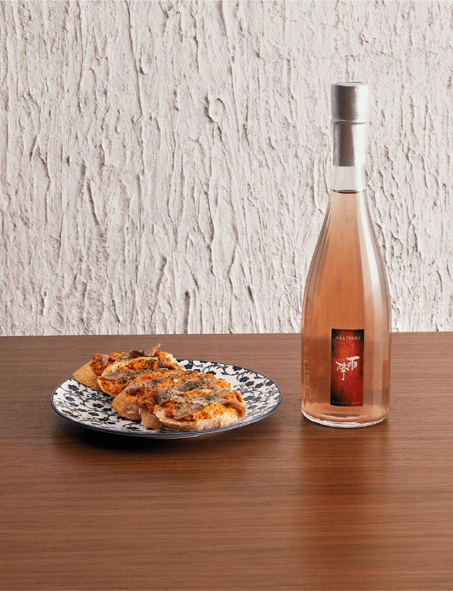
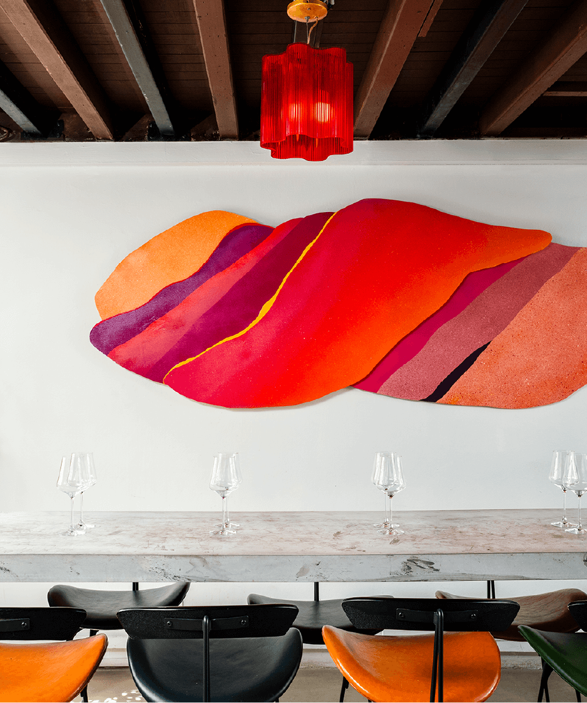

Pairing 1


Pairing 2

WINE BAR
Juice
86B Circular Road, Singapore 049438
Tel: 8950 5961
www.instagram.com/juice__sg/Juice is an off-radar wine bar located on the second floor of a shophouse on Circular Road. Opening in 2022, a group of young and determined wine lovers had a single mission; to create a community and space for grape lovers while offering an experience that is cosy, honest and homelike.
Head Chef Ben Glasman
For this campaign, the dishes were specially created by Ben Glasman, a self-taught sommelier, cheese artisan and creative home-chef. Ben was brought up in Tahiti, educated in Singapore and had a career in technology – all while cultivating a passion for food and beverage. In 2022, he left his job to lend his creative prowess to the pack behind Juice.